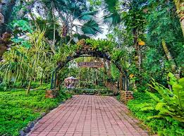

Malagos Garden Resort

Malagos Garden Resort is a 12-hectare agri-ecotourism destination in the refreshing highlands of Baguio District, Davao City. Known for its blend of nature, art, and education, it is a popular spot for families, featuring the Philippines' first chocolate museum and interactive wildlife encounters.
Top Attractions & Activities
- Malagos Chocolate Museum: An interactive museum where you can learn about cacao and even make your own chocolate in the chocolate laboratory.
- Wildlife Encounters:
Bird Feeding Dome: An immersive dome where you can hand-feed colorful tropical birds.
Interactive Bird Show: A weekend highlight featuring birds performing various tricks and skills.
Butterfly Sanctuary: A lush garden environment with a museum (Museo de Mariposa) and a sanctuary filled with fluttering butterflies.
- Recreation: The resort offers a swimming pool (primarily for in-house guests), horseback riding, calesa rides, and a children's playground.
- Art: Scattered throughout the gardens are numerous sculptures by National Artist Napoleon Abueva.
Day Tour Rates & Pricing
- Entrance Fees: Recent rates for day tours are approximately ₱650 per person, which often includes a set lunch or plated snacks.
- Buffet Options: Weekend managed lunch buffets are available at the Corral Pavilion, with special holiday buffet rates around ₱849 nett per person.
- Accommodations: For those wanting to stay longer, room rates typically start around ₱5,223 to ₱5,811 per night for two adults, depending on the season and room type.
Visiting Essentials
- Location: Baguio District, Calinan, Davao City, about a 45-minute to 1-hour drive from the city center.
- Operating Hours: Open daily from 6:00 AM to 9:00 PM.
- How to Get There:
Private Vehicle: Head south to Ulas junction, follow the Bukidnon-Davao Highway, and turn towards the Philippine Eagle Center.
Commute: Take a van (L300) bound for Calinan from the Bangkerohan terminal, then a tricycle or motorcycle to the resort.
- Booking: Prior booking is recommended for day tours and required for overnight stays via the official Malagos website.